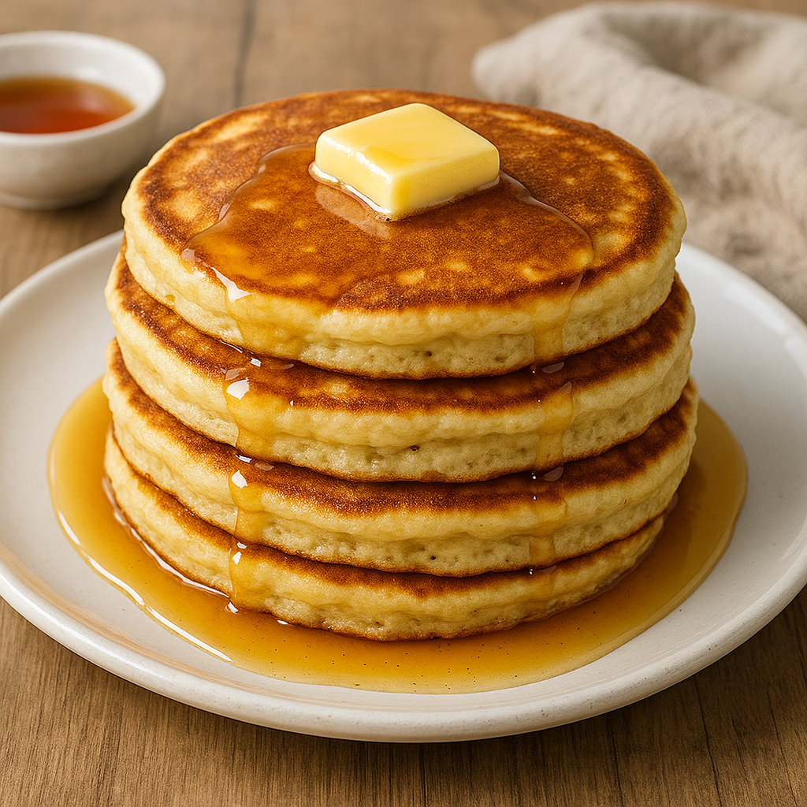

Fluffy Clabber Pancakes
Home

Description
This recipe was given to me by ChatGPT after asking it how I can use clabber that I am making from raw milk.
Ingredients
- 1 1/2 cups all-purpose flour
- 2 tablespoons sugar
- 2 teaspoons baking powder
- 1 teaspoon baking soda
- 1/2 teaspoon salt
- 2 large eggs, room temperature
- 1 1/2 cups clabber
- 1/4 cup melted butter or oil
- 1 1/2 teaspoons vanilla extract (optional)
Instructions
- In a large bowl, whisk flour, sugar, baking powder, baking soda & salt.
- In another bowl, beat eggs lightly. Add clabber, melted butter (or oil), and vanilla; whisk well.
- Pour wet into dry, stirring just until combined--don't overmix; a few lumps are okay.
- Let rest 5-10 minutes while heating your pan.
- Heat skillet over medium; grease lightly with butter or oil. Pour ~1/4 cup batter per pancake.
- Cook until small bubbles form and edges set (~2 min); flip and cook another 1-2 min until golden.
- Serve warm butter, maple syrup, fresh fruit, or jam.